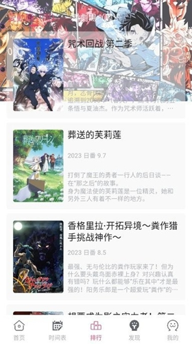

GirigiriAPP 用了三个月才踩透的五个坑 装之前先看看
Girigiri 看着简单清爽，但推送通知、主题同步、数据迁移这些地方藏着让人闹心的细节。本文把我踩过的坑一条一条列出来，附解法，希望你不用再从头摸黑。
初次接触 GirigiriAPP官网 时我以为它就是个干干净净的追番工具——界面不花里胡哨，分类清楚，点进去就能看。但用了三个月、换了一次平板、重装了两次之后，我发现这东西在一些你想不到的地方藏着坑。不是什么致命 bug，就是你没料到它会那样，等遇到的时候才发现绕不过去。
下面五个是我实打实踩过的，希望你看了之后不用再踩一遍。
坑一：更新通知收不到，但书架上已经有红标了
症状
订阅了好几部番，某天下午打开 app，发现书架上有两部已经标了「NEW 3」「NEW 5」，但手机从头到尾没弹过一条推送。去设置里翻了一遍，应用内的通知开关也是开的，系统通知权限也给了，就是不响。
原因
这个坑我查了好几天才搞明白——安卓系统的通知渠道（Notification Channel）。Girigiri 的追更推送走的是一个单独的通知渠道，如果这个渠道被你或者手机管家之类的工具屏蔽了，应用本身不会报错，也不会提示。书架上的更新标记是本地扫描出来的，不依赖推送通道，所以两边表现不一致。
另外还有一种情况：应用被电池优化白名单排除了。安卓系统会杀掉后台应用节省电量，Girigiri 不在白名单里的话，休眠期间就没法定期检查更新，自然也发不出推送。
解法
进手机设置 → 应用 → Girigiri → 通知，先看一眼追更那个渠道的开关是否独立打开。然后进电池/性能设置，把 Girigiri 加入「允许后台活动」或者「不受限制」的白名单。做完这两步，下次更新应该就能正常收到了。如果还不行，试试强制停止应用再重新打开，有时候被系统卡住的通知通道需要重新激活。
坑二：换设备登录之后，所有主题设置又变回默认浅色
症状
家里的手机设了深色主题、漫画阅读器也开了夜间模式，晚上躺床上看特别舒服。然后买了个平板，登录同一个账号，打开一看——白底黑字，差点把眼睛闪瞎。翻了半天才找到主题设置，又得逐个重新调一遍。
原因
这其实是应用当前的设计决定——显示主题、字体大小、漫画阅读器设置这些偏好只存在本地，不跟着账号云端同步。书架、历史进度、关注列表这些数据是云同步的，但纯粹的显示个性化设置不走云端。
后来去 GirigiriAPP文档 翻了一下才确认，样本文档里明说了这一点，但我没仔细看就直接换了设备，结果白调了半小时。
解法
目前没有一键同步的办法，只能每台设备分别调一遍。如果你有多台设备（手机 + 平板），建议第一次登录新设备的第一件事就是先把主题、字体、夜间模式全部调好，再开始用，避免中途被刺眼的默认设置打断心情。未来如果应用更新了云同步功能，应该会自动生效，但在那之前只能手动。
坑三：不登录就重装 app，书架和历史全没了
症状
某天手机清理空间，嫌 app 缓存太大就卸载重装了。装好之后打开一看——书架空空荡荡，之前追了二十多部番全没了，播放历史也清空了。当时脸都黑了。
原因
不登录账号的情况下，所有数据都是本地存储。卸载 app 会把 app 目录下的数据一并清掉，没有任何云端备份兜底。书架、收藏、历史记录，这些全跟着本地数据库走，删了就没了。
解法
注册登录一个账号花不了一分钟——安装包记得从 官方下载 拿，别在各种应用商店里乱装——但这能保住你所有的追更数据。登录之后书架、收藏、历史进度会自动绑定到账号，换手机、重装都能通过同一个账号拉回来。手机号注册或者第三方一键授权都行，选你觉得方便的。
坑四：同步延迟——手机上刚关注的番，平板上找不到
症状
在手机上刚关注了一部新番，转头拿平板打开，书架里怎么都找不到。下拉刷新了好几次，退出重登也试了，等了大概十分钟才终于出现。
原因
多设备同步不是实时的，应用内部有一个同步周期。如果你在流量环境下操作，服务器响应可能更慢；另外，Girigiri 不限制同时登录的设备数量，但极端情况下多设备同时操作同一份数据时，偶尔会出现冲突，需要等下一次同步周期来解决。
解法
遇到同步延迟先别急着退出重登——大部分时候等个几分钟就好。如果十分钟以上还没同步过来，试试切换到 WiFi 环境下拉一次手动刷新，比流量下靠谱。另外注意，缓存内容是不跨设备同步的，这个是设计如此，别等着它自己出现了。
坑五：漫画阅读器的夜间模式和 app 深色主题是两套东西
症状
开了 app 的深色主题，首页和书架都暗下来了，但点进漫画一看——还是白底，晃得眼睛疼。翻了好久才发现还要在漫画阅读器里单独开一遍夜间模式。
原因
app 整体主题和漫画阅读器的夜间模式是两套独立的设置开关。深色主题管的是导航区域（首页、分类、书架这些），漫画阅读器夜间模式只影响漫画页面本身。两个互不影响，各管各的。

解法
白天用浅色主题 + 漫画标准模式，晚上看番记得先切 app 深色主题，再进漫画开一下夜间模式。如果嫌麻烦，可以养成习惯：睡前躺床上看的话，进 app 第一件事先切深色主题，进漫画再顺手开夜间模式，形成肌肉记忆就不会忘了。
防坑清单
把上面五个坑浓缩成 3 条速查：
- 先登录再用，别等数据丢了才后悔。注册花一分钟，保住书架一辈子。
- 通知收不到优先查安卓通知渠道和电池白名单，比重装 app 靠谱一百倍。
- 换设备记得先手动调主题，显示设置不走云端同步，别指望它自动跟上。
Girigiri 本质上还是一个做得比较干净的追番工具，坑都不是什么离谱的 bug，就是一些你没料到的设计选择——顺手说一句，GitHub、Gitee、GitCode 上也有更完整的软件资料，需要的话可以去看看。知道这些坑之后，这软件其实相当省心。